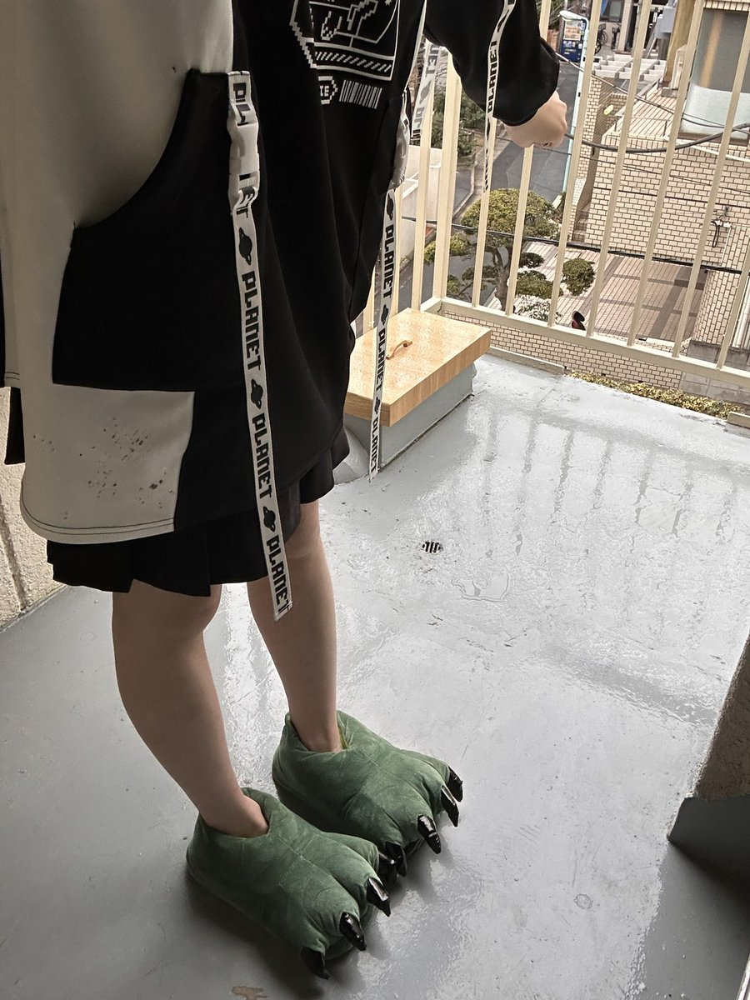

糯米🍬纸 (4.0寻回互关
@Numiouoo
@SpicyspacEmk16 抱抱……怎么会这样……希望宝宝一切会变好

スパイシスペース
@SpicyspacEmk16
世界真的带着强大的恶意又再次强迫我活着承受痛苦了 我真的要活不下去了
求东京线下有好哥哥包我夜…
我只要包夜6000日元任您玩！
我不知道市场价 也只敢往便宜了说吧
不过是东京！！东京！！求求了有没有可以救救我的人…
我知道自己很脏很下贱的…
只求有好心人愿意买我就好… https://t.co/G3JYFcxjik